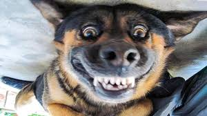

Reasons I like Dogs
- They Eat Food
- You Can Pat Them
- They Mostly Fluff
- They Go Woof
This is Mr. Pickles

- He has Big Snog
- He go to Dentist Often
- They don't know he Upside Down
- He smile
This is Bunny

- He Perk his Ears
- His Teeth are like a Beaver
- He got the Fluff
- Gets Confused what his Species Is
Roses are Red
Violets are Blue
Dogs are Cool
They Even Can Swim in a Pool
More About Dogs